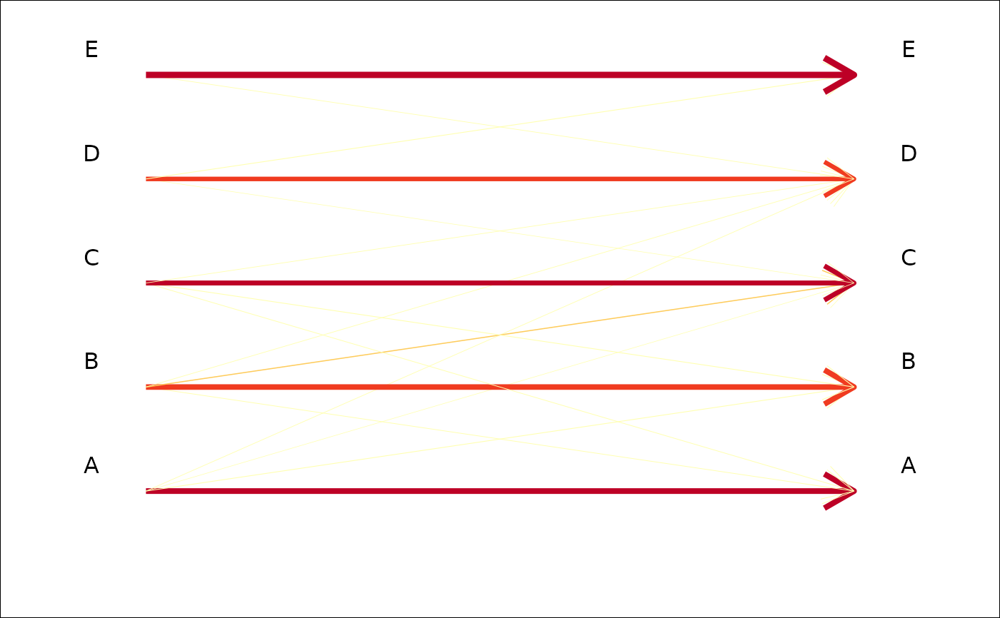
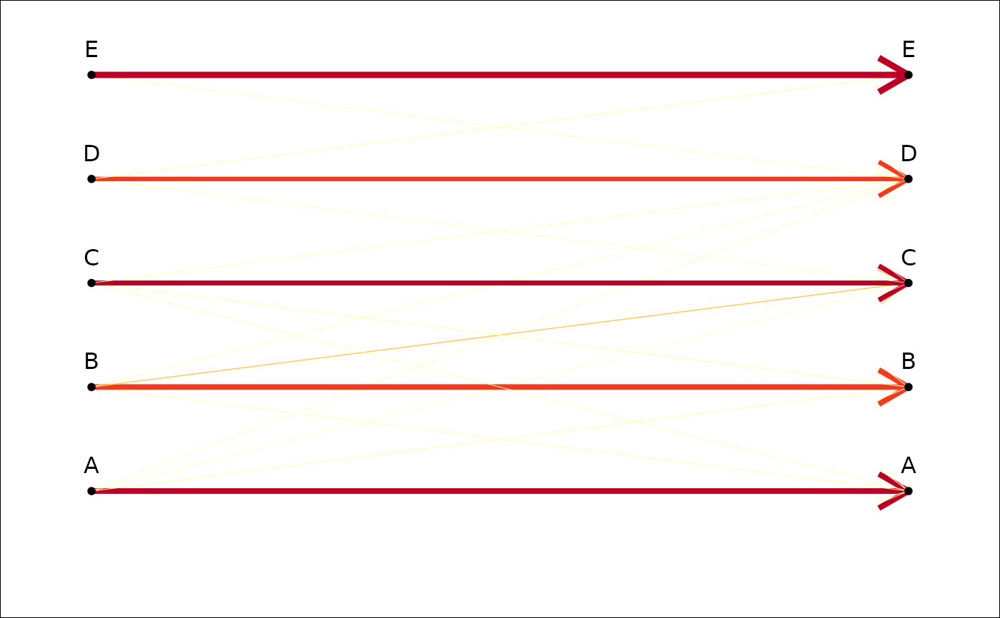
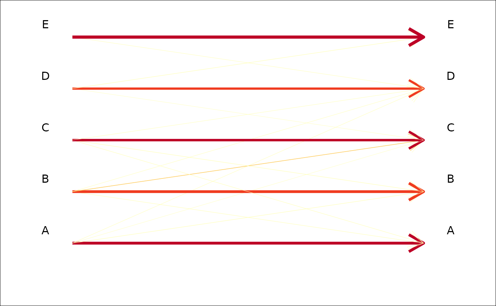
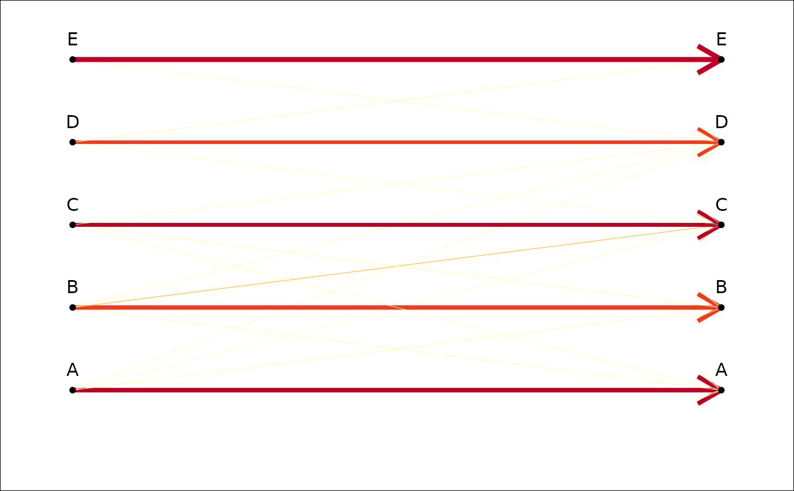
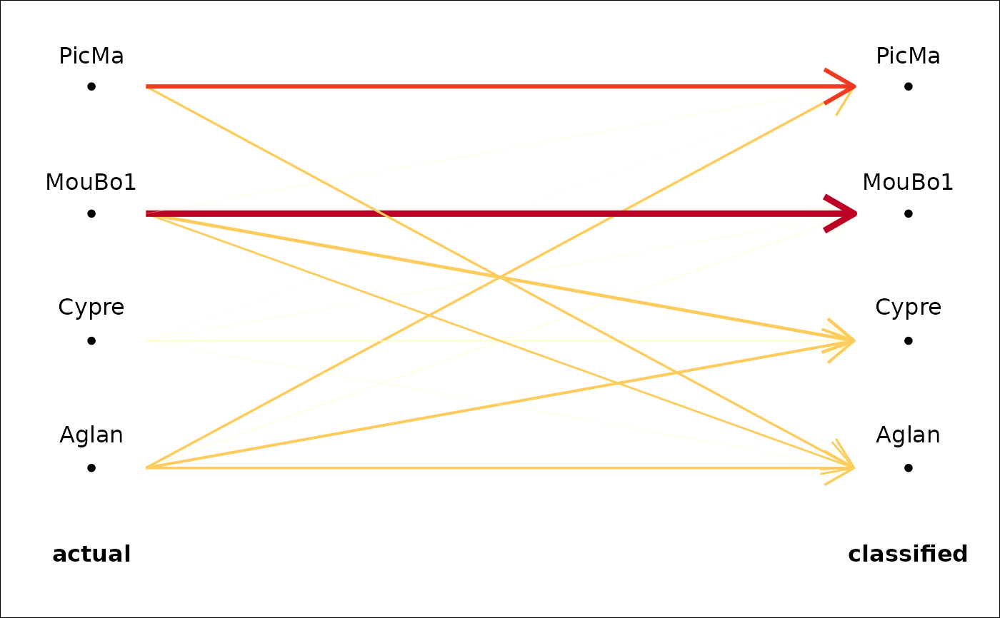
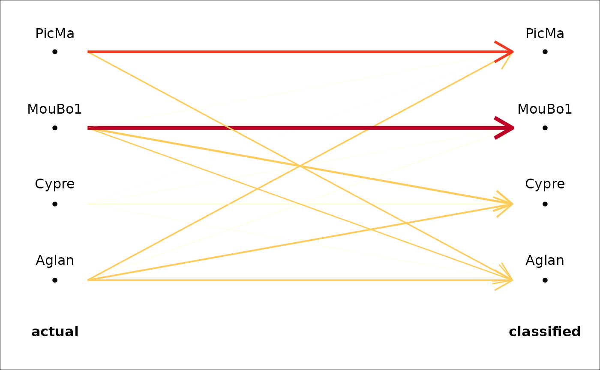

Or any contingency/confusion table. A simple graphic representation based on variable width and/or color for arrows or segments, based on the relative frequencies.
Usage
plot_CV2(x, ...)
# S3 method for class 'LDA'
plot_CV2(x, ...)
# S3 method for class 'table'
plot_CV2(
x,
links.FUN = arrows,
col = TRUE,
col0 = "black",
col.breaks = 5,
palette = col_heat,
lwd = TRUE,
lwd0 = 5,
gap.dots = 0.2,
pch.dots = 20,
gap.names = 0.25,
cex.names = 1,
legend = TRUE,
...
)Arguments
- x
an LDA object, a table or a squared matrix
- ...
useless here.
- links.FUN
a function to draw the links: eg segments (by default), arrows, etc.
- col
logical whether to vary the color of the links
- col0
a color for the default link (when
col = FALSE)- col.breaks
the number of different colors
- palette
a color palette, eg col_summer, col_hot, etc.
- lwd
logical whether to vary the width of the links
- lwd0
a width for the default link (when
lwd = FALSE)- gap.dots
numeric to set space between the dots and the links
- pch.dots
a pch for the dots
- gap.names
numeric to set the space between the dots and the group names
- cex.names
a cex for the names
- legend
logical whether to add a legend
Note
When freq=FALSE, the fill colors are not weighted
within actual classes and should not be displayed if classes sizes are not balanced.
Examples
# Below various table that you can try. We will use the last one for the examples.
#pure random
a <- sample(rep(letters[1:4], each=10))
b <- sample(rep(letters[1:4], each=10))
tab <- table(a, b)
# veryhuge + some structure
a <- sample(rep(letters[1:10], each=10))
b <- sample(rep(letters[1:10], each=10))
tab <- table(a, b)
diag(tab) <- round(runif(10, 10, 20))
tab <- matrix(c(8, 3, 1, 0, 0,
2, 7, 1, 2, 3,
3, 5, 9, 1, 1,
1, 1, 2, 7, 1,
0, 9, 1, 4, 5), 5, 5, byrow=TRUE)
tab <- as.table(tab)
# good prediction
tab <- matrix(c(8, 1, 1, 0, 0,
1, 7, 1, 0, 0,
1, 2, 9, 1, 0,
1, 1, 1, 7, 1,
0, 0, 0, 1, 8), 5, 5, byrow=TRUE)
tab <- as.table(tab)
plot_CV2(tab)
 plot_CV2(tab, arrows) # if you prefer arrows
plot_CV2(tab, lwd=FALSE, lwd0=1, palette=col_india) # if you like india but not lwds
plot_CV2(tab, arrows) # if you prefer arrows
plot_CV2(tab, lwd=FALSE, lwd0=1, palette=col_india) # if you like india but not lwds
 plot_CV2(tab, col=FALSE, col0='pink') # only lwd
plot_CV2(tab, col=FALSE, col0='pink') # only lwd
 plot_CV2(tab, col=FALSE, lwd0=10, cex.names=2) # if you're getting old
plot_CV2(tab, col=FALSE, lwd0=10, cex.names=2) # if you're getting old
 plot_CV2(tab, col=FALSE, lwd=FALSE) # pretty but useless
plot_CV2(tab, col=FALSE, lwd=FALSE) # pretty but useless
 plot_CV2(tab, col.breaks=2) # if you think it's either good or bad
plot_CV2(tab, col.breaks=2) # if you think it's either good or bad
 plot_CV2(tab, pch=NA) # if you do not like dots

plot_CV2(tab, gap.dots=0) # if you want to 'fill the gap'

plot_CV2(tab, gap.dots=1) # or not
plot_CV2(tab, pch=NA) # if you do not like dots

plot_CV2(tab, gap.dots=0) # if you want to 'fill the gap'

plot_CV2(tab, gap.dots=1) # or not
 #trilo examples
trilo.f <- efourier(trilo, 8)
#> 'norm=TRUE' is used and this may be troublesome. See ?efourier #Details
trilo.l <- LDA(PCA(trilo.f), 'onto')
#> 8 PC retained
trilo.l
#> * Cross-validation table ($CV.tab):
#> classified
#> actual a b c d
#> a 0 5 2 0
#> b 3 12 1 0
#> c 0 3 11 4
#> d 0 0 3 6
#>
#> * Class accuracy ($CV.ce):
#> a b c d
#> 0.0000000 0.7500000 0.6111111 0.6666667
#>
#> * Leave-one-out cross-validation ($CV.correct): (58% - 29/50):
plot_CV2(trilo.l)
#trilo examples
trilo.f <- efourier(trilo, 8)
#> 'norm=TRUE' is used and this may be troublesome. See ?efourier #Details
trilo.l <- LDA(PCA(trilo.f), 'onto')
#> 8 PC retained
trilo.l
#> * Cross-validation table ($CV.tab):
#> classified
#> actual a b c d
#> a 0 5 2 0
#> b 3 12 1 0
#> c 0 3 11 4
#> d 0 0 3 6
#>
#> * Class accuracy ($CV.ce):
#> a b c d
#> 0.0000000 0.7500000 0.6111111 0.6666667
#>
#> * Leave-one-out cross-validation ($CV.correct): (58% - 29/50):
plot_CV2(trilo.l)
 # olea example
op <- opoly(olea, 5)
#> 'nb.pts' missing and set to 91
opl <- LDA(PCA(op), 'var')
#> 4 PC retained
plot_CV2(opl)

# olea example
op <- opoly(olea, 5)
#> 'nb.pts' missing and set to 91
opl <- LDA(PCA(op), 'var')
#> 4 PC retained
plot_CV2(opl)
